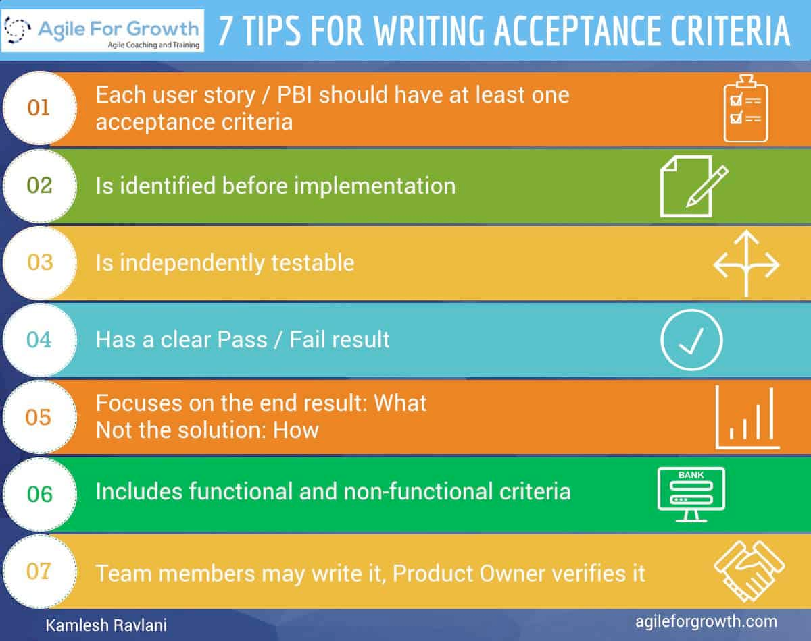

(...an agile basics lightning talk)
C.C.C.
I.N.V.E.S.T. in good user stories
(... and S.M.A.R.T. tasks)
Chaos Computer Club
Card
Conversation
Confirmation
Independent
Negotiable
Valuable
Estimable
Small
Testable
User stories describe "WHAT" to do
Tasks describe "HOW" to do it
As ... (role)
I would like to ... ("what"),
because ... ("why")
aka "Explorational Story"
I.N.V.Estimable.S.T.
Goal / outcome is not defined or abstract
Time investment => Limitation by timebox
Timebox has been hit: Talk to PO & Team
Possible results: new user stories, prototype, etc.
"I split, therefore I am"
(unknown Product Owner, 1998)
Choose a split that lets you
deprioritize or throw away stories
Identify waste
80 / 20
Think MVP
Choose the split that gets you
more equally sized, small stories
I.N.V.E.Small.T.
Improve flow (Kanban thinking)
Reduce volatility
Reduce risk
Improve accuracy of forecasts to match "real" deadlines
Reduce dependencies

Acceptance Criteria in BDD
(Behavior Driven Development)
GIVEN ...
WHEN ...
THEN ...
... and be the agile basics with you.